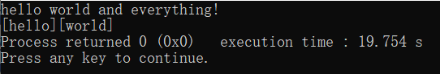

如果你学习的第一门语言就是C语言，那么我想你一定因为输入数据的问题而困扰过吧……C语言的输入方式是如此的庞多且繁杂，有诸如printf, getchar, gets, fgets, getch, fread, freopen等大量与输入有关的函数，而又因为许多特殊字符，从一般的空格、换行符到庞多的占位符、其他转义符的存在，足以让初学者眼花缭乱，从而在Hello world面前便望而却步……所以现在我便分享一下我个人对C语言输入相关的浅薄的见解。
注：因篇幅有限，本篇内容只针对较为难理解的输入流部分的内容，而对占位符、转义符等相对简单的内容不做讨论，并且只讨论从标准输入流(stdin)，即标准输入设备，一般是键盘输入内容，而不讨论文件读写。下面仅以printf,getchar和gets三种最常用的输入函数为例。并且为了通俗起见，下文内容可能可能会有不严谨的地方，严谨的表述请以
C/C++标准 为准。
本帖大致会从以下两个方面对输入流读入机制进行简单的分析：
输入流简单介绍 、
激活和获取输入流 。
什么是输入流？
一个程序的 输入流 是使用程序的用户从程序启动开始在程序内输入的字符序列队列。 队列 是一种线性数据结构，可以大致理解成是一个长度灵活变化的数组，并且遵循里面的元素是先进先出的原则。这个数组的第一个元素叫做 队首，最后一个元素叫做 队尾 。先进先出指的是每次从输入流获取一个元素，能且仅能获取队首，并且获取完毕之后，队首元素会被移除出队，下一个元素成为新的队首，这个过程称为
出队；并且，每次新插入队的元素一定是放置在原本队尾的后面成为新的队尾的，这个过程称为 入队。此外，如果一个队列没有元素，称为
队空。
输入流是一种队列。运行程序时，在一些时机（下文会具体分析是什么时机）下，用户从键盘输入的内容会依据输入时间的先后，依次入队输入流，在这里我们称之为 激活输入流。而输入函数（如printf, getchar, gets）则会从输入流中获取队首元素并让队首出队，这个过程会执行若干次，不同的输入函数有不同的执行机制，这个过程在这里我们称之为 获取输入流。
下面举一个熟知的例子先粗略理解一下上述的文字，假设我们有一样的一段代码：
对上面的代码，假设我们输入了“hello world and everything!”，那么程序的运行如下图所示：

在上面的例子中，当我们输入回车(无论是按下回车还是粘贴的内容出现了回车的粘贴中还未完毕的那一刻)的时候，激活了输入流。激活之后，输入流可以粗略看成是一个长为28个的字符队列，队首是h，队尾是换行符\n(注意，队尾不是感叹号)。
注：准确来说，按下回车并不必然意味着输入的是\n，只不过在多数操作系统是如此。在一些其他操作系统下，按下回车实际上输入的可能是\r，或者是\r\n等。
这时候程序的scanf语句获取输入流，根据%s占位符规则（下文会详细介绍），连续出队了五个char字符元素，按照时间先后分别是'h','e','l','l','o'，这五个字符存进了char数组变量x中；由于还有另外一个%s，所以随后出队' '，它没有存进任何变量中；接下来，再次连续出队五个char字符元素'w','o','r','l','d'，存进了变量y中，此时，停止获取输入流。所以当scanf语句结束后，此刻的输入流队首是第二个空格，第二个元素是'a'，输入流长度是27-11=16。
有了一个简单的例子作了铺垫，接下来可以详细分析一下激活输入流和获取输入流的详细机制了。
激活和获取输入流
scanf的激活和获取输入流规则
scanf的激活输入流的规则是：如果执行到scanf语句的时候，输入流不为队空状态，那么直接获取输入流。如果获取输入流尚未结束时触发了队空，那么激活输入流，继续获取，如此往复，直到获取输入流结束，则scanf语句执行完毕。用伪代码表示流程如下：
接下来介绍scanf占位符(主要包括%c,%d(%lld),%f(%lf),%s四种)和一般字符获取输入流规则。首先介绍单个占位符的scanf语句机制：
%c(或%*c)的获取输入流机制为：直接取一次队首赋值给对应变量，接着队首出队，然后结束获取输入流。伪代码如图所示：
%d(或%lld,%o,%u,%hd,%x,%2d等所有整数占位符)的获取输入流机制为：首先预处理，如果队首是空白字符(主要是空格和回车，即isspace函数返回值是1)，清除空白字符，出队，如果不是空白字符，结束预处理；如果队首是数字(即isdigit函数返回值是1)或正负号，那么继续读取，并让队首出队；否则(如读到回车)队首不出队，且结束获取输入流，将已经读到的所有内容赋值给对应变量。
空白字符包括空格' '，回车'\n','\r',制表符'\t','\v'等。
正负号能且只能读取一个，读取到第二个直接结束获取输入流，如输入若干空格和回车的组合之后输入+-3只读取到+，然后结束获取输入流，输入流为"+-3"，scanf结束后，输入流为"-3\n"；而输入-500后读取到-500，然后因为回车字符结束获取输入流，scanf结束后，输入流为"\n"。
伪代码如下：
%f(或%lf,%Lf等所有浮点数占位符)的获取输入流机制为：首先进行同上的预处理，然后如果读取到正负号和小数点规则也是一次原则，如果读取到指数符号一次,那么后面还可以跟一次正负号和数字(或什么也不跟,但不能再跟小数点)，上述读取成功后，队首出队，继续读取；其他情况下队首不出队，赋值变量，结束获取输入流。
注意小数点可以省略前导零或后导零的其中一个，如3.代表3.0，.7代表0.7，此时输入流均为"\n"；而单独一个.结束获取输入流，此时输入流为"\n"
伪代码如下：
%s的获取输入流机制为：首先进行同上的预处理，然后如果读到第一个非空白字符，预处理结束，队首出队，继续处理，直到再次读到了一个空白字符，队首不出队，赋值变量，结束获取输入流。伪代码如下：
对于一般的单个字符，获取输入流机制如下：如果队首就是这个字符，直接出队，结束获取输入流；否则不出队，直接结束获取输入流。伪代码如下：
对于多个占位符和一般字符的组合参数，对参数从左往右执行上述的规则，执行过程中如果任何一个单一参数处结束了输入流，则直接结束该scanf语句，即使后面还有未被处理的参数也不予处理，伪代码如下：
下面举例对上述机制进行阐述，对于下列程序：
输入文本如下：
程序输出如下：
详细过程解析如下：
程序开始运行，并且运行到第8行的scanf，程序暂时中止，等待用户输入。
用户输入到第一行末尾的回车的时候(如果是亲手输入，那就是按下回车那一刻，如果是粘贴全部文本，那就是粘贴过程中刚好粘贴到第一个回车的时候马上暂时中止粘贴，然后激活)激活输入流，此时，输入流是第一行文本，即"+-5.3e-1.2\n"，此时开始运行第八行代码。
执行第八行代码scanf("%d", &i1)，读取了第一个正号，由于正负号只能出现一次，所以到负号时停止，没有对i1进行任何赋值，获取输入流结束，此时输入流为"-5.3e-1.2\n"，第八行代码执行结束。
执行第九行代码scanf("%c", &c1)，由于输入流不是队空，所以继续获取，将'-'赋值给c1，获取输入流结束，此时输入流为"5.3e-1.2\n"，第八行代码执行结束。
执行第十行代码scanf("%lf", &f1)，由于输入流不是队空，所以继续获取，将5.3e-1赋值给f1，由于指数部分出现了'.'，所以获取输入流结束，f2=5.3e-1即5.3乘以10的-1次方，即f2=0.53，此时输入流为".2\n"，第十行代码执行结束。
执行第十一行代码scanf("%lf", &f2)，由于输入流不是队空，所以继续获取，将.2赋值给f2，由于之后读取到了换行符，所以获取输入流结束，f2=.2=0.2，此时输入流为"\n"，第十一行代码执行结束。
执行第十二行代码scanf("%lf", &f3)，发现空白字符，进行预处理，预处理后输入流队空，所以等待用户继续输入；用户输入第二行，是回车，还是空白字符，处理后队空，所以继续等待，第三行同理，然后读入了第四行，此时输入流为" 5.gc lr580 53c d56 e\n"，预处理掉前三个空格，然后读取走"5."，遇到了g，获取输入流结束，f3=5.=5.0，此时输入流为"gc lr580 53c d56 e\n"，第十二行代码执行结束。
执行第十三行代码scanf("g")，要读取到的恰好是g，直接出队(如果不是那么不对出队，且获取输入流结束)，获取输入流结束，此时输入流为"c lr580 53c d56 e\n"，第十三行代码执行结束。
执行第十四行代码scanf("%c", &c2)，将'c'赋值给c2，获取输入流结束，此时输入流为" lr580 53c d56 e\n"，第十四行代码执行结束。
执行第十五行代码scanf("%s", s)，预处理掉一个空格，然后读取到"lr580"赋值给s，然后遇到空白字符' '，获取输入流结束，此时输入流为" 53c d56 e\n"，第十五行代码执行结束。
执行第十六行代码scanf("%d%c", &i3, &c3)，预处理掉一个空格，然后读取到53赋值给i3，然后遇到字符'c'，赋值给c3，获取输入流结束，此时输入流为" d56 e\n"，第十六行代码执行结束。
执行第十七行代码scanf("%d%c", &i4, &c4)，预处理掉一个空格，然后读取到'd'，不进行赋值，因为第一个占位符不满足条件，获取输入流结束，i4,c4都未被赋值，此时输入流为"d56 e\n"，第十七行代码执行结束。
执行第十八行代码scanf("%c", &c5)，将'd'赋值给c5，获取输入流结束，此时输入流为"56 e\n"，第十八行代码执行结束。
接下来输入各变量值，程序运行结束。如果后面还有scanf，那么会首先从第十八行的输入流开始获取，直到输入流队空才会再次程序暂时中止等待用户输入。
putchar和gets的激活和获取输入流规则
事实上，getchar和gets可以用scanf来表示，所以getchar和gets可以视为scanf的延伸，具有scanf的性质。仅用scanf和普通C语言代码实现getchar，然后可以用getchar和普通C语言代码实现gets，分别展示如下：
得知getchar和gets的代码实现，就可以很方便地陈述它们的激活和获取输入规则了。显然，getchar的规则等同于scanf的%c规则，只是参数和返回值不一样。而gets的规则是：如果队首是换行符(回车)，那么队首出队，结束获取输入流；否则，队首进行赋值然后队首出队，继续获取输入流。
篇幅略长，感谢读者能够耐心读到这里。希望这篇帖子能够对读者有所帮助~